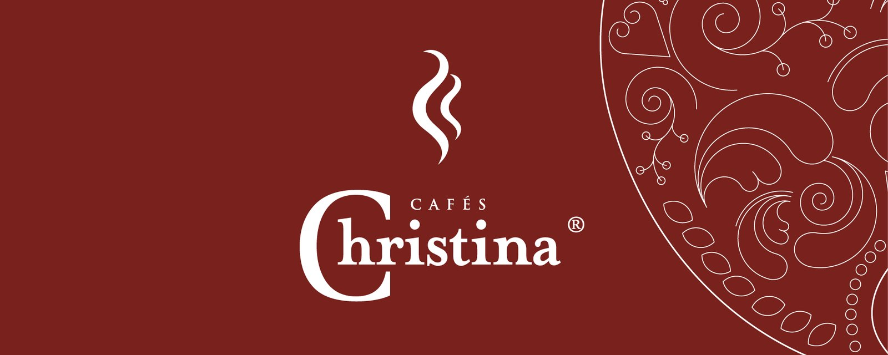
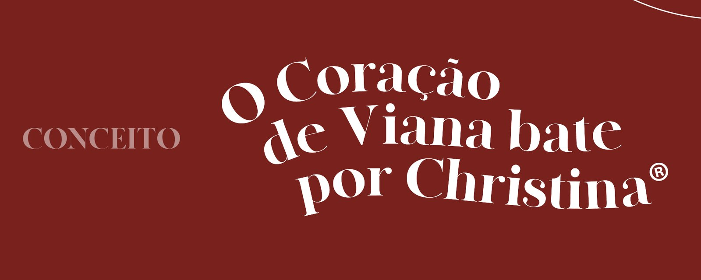
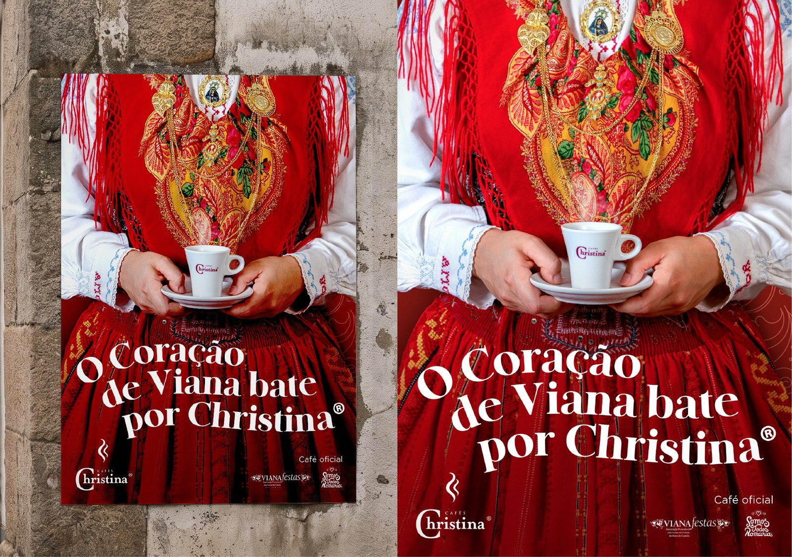
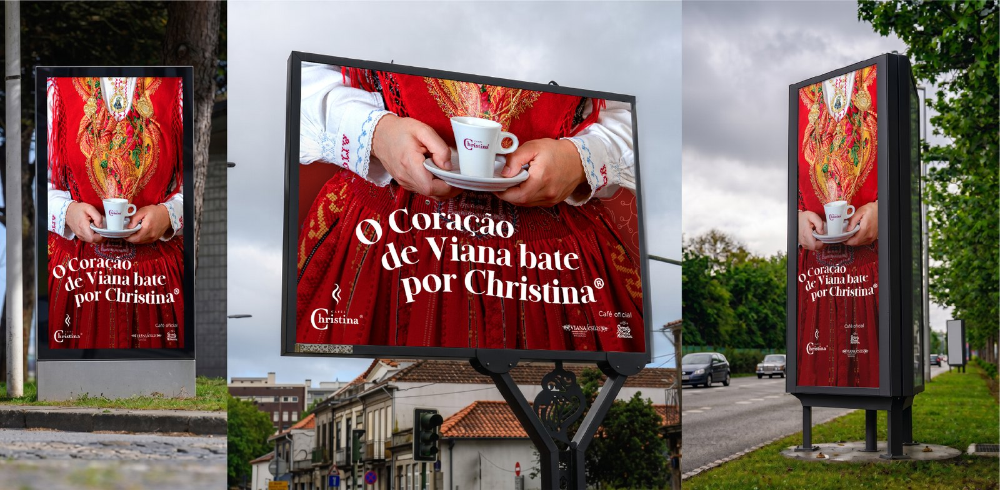
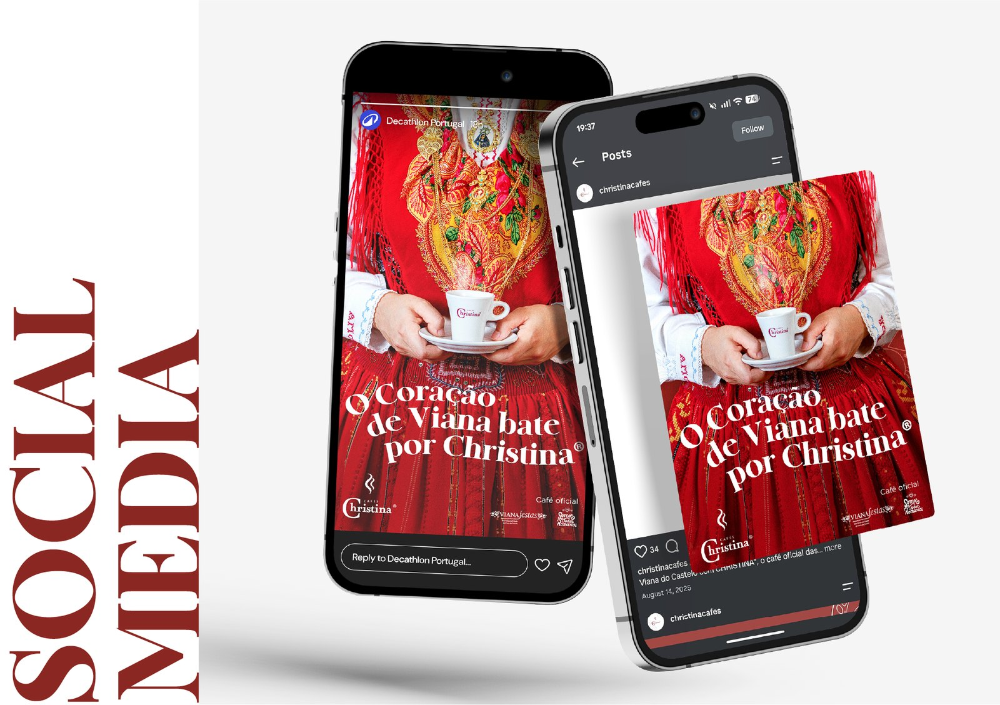
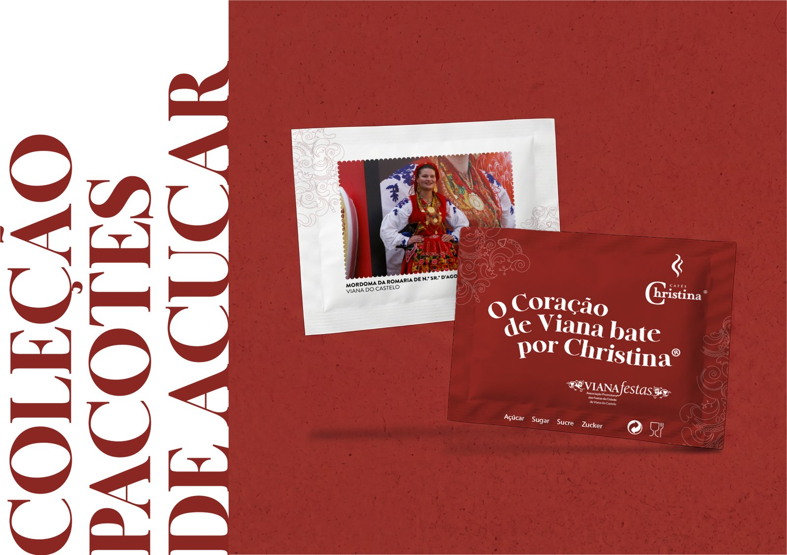
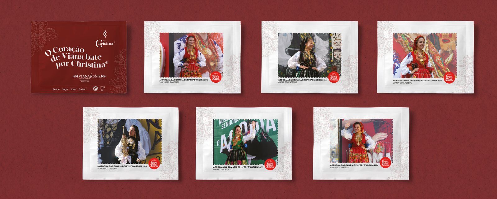
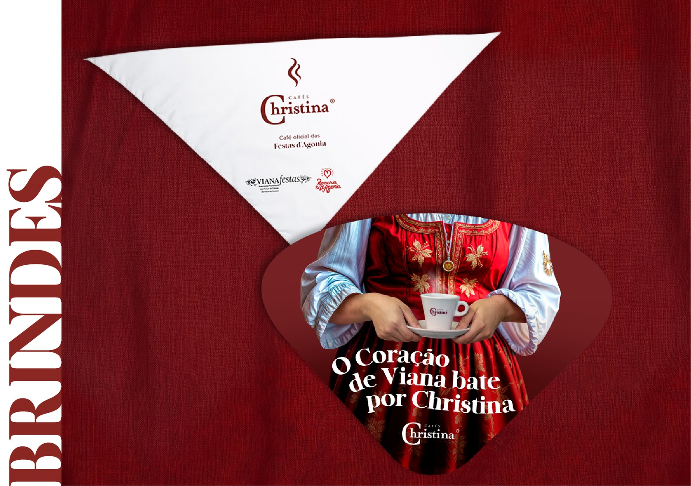

Christina › Romaria Nossa Senhora d'Agonia
- Agency
- WOLT — Energy for Brands
- Creative Director
- Francisco Freitas
- Project Manager
- Rita Gouveia / Margarida Abegão
- Design
- Diogo Nóbrega
- Copy
- Pedro Cristino
- Client
- Christina Cafés
O projeto para a presença dos Cafés Christina na Romaria d'Agonia focou-se no conceito "O coração de Viana bate por Christina", unindo a paixão pelo café à tradição local. Desenvolvi uma identidade visual que se desdobrou em ativações estratégicas e memoráveis para o público. Estas incluíram uma coleção de pacotes de açúcar de homenagem a antigas mordomas, brindes úteis para o calor da festa (leques e lenços), e uma dinâmica interativa onde os romeiros uniam metades de um "Coração de Viana" em puzzle para ganharem cafés.
The project for Cafés Christina at the Romaria d'Agonia festival was built around the concept "The heart of Viana beats for Christina", blending the brand's passion for coffee with local traditions. I developed a visual identity that translated into strategic and memorable activations for the public. These included a collectible sugar packet series honoring past festival queens, practical giveaways for the summer heat (fans and scarves), and an interactive dynamic where festival-goers matched halves of a "Viana Heart" puzzle to win free coffees.







